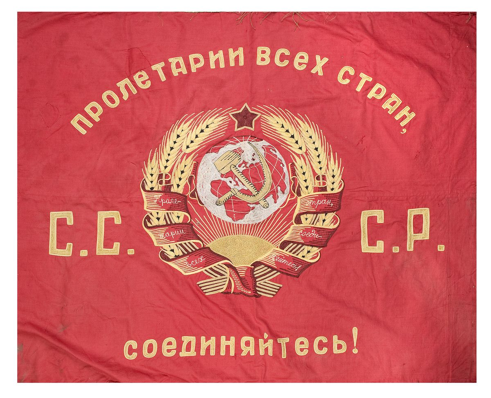
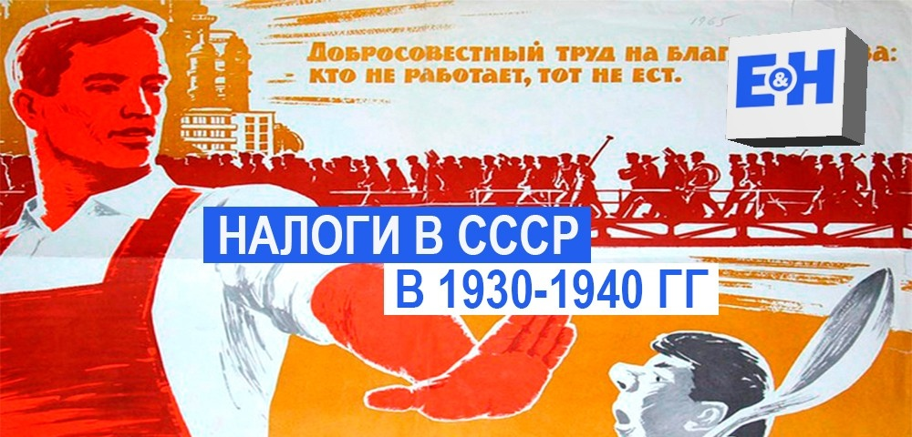

Налоговая система в СССР 1930-1941 гг.
С окончанием нэпа основой экономики становилось социалистическое предприятие, переводимое на хозрасчет. В сельском хозяйстве началась сплошная коллективизация, предусматривавшая создание колхозов и совхозов и ликвидацию кулачества. Таким образом, назрела кардинальная налоговая реформа, потребовавшая пересмотра основных принципов налоговой политики.

Налоговая реформа СССР в 1930-1932 гг. представляла собой преобразование взаимоотношений предприятий, организаций обобществленного сектора народного хозяйства (государственных и кооперативных предприятий) с государственным бюджетом. Реформа проводилась в соответствии с постановлением ЦИК и СНК СССР от 2 сентября 1930 г. в комплексе с политическими, экономическими и организационными мероприятиями, обеспечившими завершение процесса преобразования системы государственных финансов и денежно-кредитной сферы.
Основные задачи налоговой реформы заключались в устранении множественности платежей в бюджет; реорганизации налоговой формы платежей государственных и кооперативных предприятий и организаций в плановое распределение и перераспределение национального дохода в соответствии с целями государства. Около 60 видов прежде существовавших налогов и сборов в обобществленном секторе были заменены двумя шестью основными платежами:
- налог с оборота предприятий общественного сектора экономики;
- отчисления в доход государства прибылей госпредприятий;
- подоходный налог с предприятий обобществленного сектора;
- единая госпошлина;
- промысловый налог с частных предприятий и промыслов;
- подоходный налог с частных лиц.
Доходы государственного бюджета формировались за счет поступлений от «социалистического хозяйства» и платежей населения (налоговых платежей). Основным источником доходов бюджета были денежные накопления государственных объединений, предприятий, хозяйственных органов. Эти платежи объединялись в следующие группы:
1) в обобществленном секторе - налог с оборота, платежи из прибыли, подоходный налог с кооперации, налог с нетоварных операций предприятий обобществленного сектора, налог с оборота кинотеатров, налог с совхозов, единая пошлина и другие платежи;
2) в частном секторе - промысловый налог, подоходный налог с частных лиц, налог на сверхприбыль, сельскохозяйственный налог, подоходный налог с колхозов, самообложение, единовременный налог на единоличные крестьянские хозяйства, сбор на нужды жилищного и культурно-бытового строительства, поимущественные налоги, единая пошлина и др. платежи.

В 1937 г. учреждаются приходные кассы по налогам - структурные подразделения районных финансовых отделов. Приходные кассы по налогам принимали налоговые и страховые платежи от сельского населения. Кассы открывались непосредственно при районных финансовых отделах и принимали налоговые платежи в районном центре, выездные кассы - в селах и колхозах. В связи с введением должности налоговых агентов приходно-расходные и выездные кассы были упразднены в 1938 г., а кассы районных финансовых отделов - в 1939 г.
В основе серии налоговых реформаций 1930-х годов лежал поиск действенных экономических механизмов, способных обеспечить централизованное регулирование экономики, форсировать процесс ускорения государственных накоплений на реализацию планов индустриализации промышленности, усилить контроль за хозяйственной и финансовой деятельностью предприятий.

Продолжается создание наиболее благоприятных условий при взимании подоходного налога для граждан, занятых в общественном производстве, на государственных и кооперативных предприятиях, с одной стороны, и ограничение доходов от частной предпринимательской деятельности, с другой. Доля подоходного налога с населения составляла не более 6%. Данный налог являлся важнейшим платежом частного сектора в городе. С момента его введения в 1923 г. он имел прогрессивную шкалу ставок и дифференциацию этих ставок по классовому признаку.
В этот период появляются элементы социальной направленности подоходного налогообложения посредством развития системы налоговых льгот, предоставляемых рабочим и служащим в зависимости от наличия детей и иждивенцев в семье.
В целом происходило последовательное упрощение системы налогов, налоговые платежи все более теряли характер многофункционального экономического инструмента и трансформировались в нормативные отчисления. Неоднократно поднимался вопрос об отмене налоговой системы как таковой.